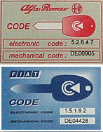
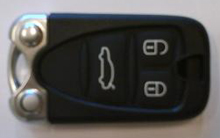

This function is used to program keys and remote transmitter (TEG). The vehicle has its own specific "Code card", on this you will find the "Electronic Code". To perform programming the code must be available (see figure below).
Note:
All available keys must be programmed at the same time. Existing keys that are not stored will be locked out in the control unit's memory and rendered unusable for all time. Max. number of keys that can be stored is 8.
When using the push-button "Cancel" in the function before keys have been saved in the memory, the program must be closed and restarted again. If this is not done, the system will lock up.
Test conditions:
Ignition on, engine off.
Battery voltage above 12V.
No faults in the system.
Procedure:
Start the function.
Follow the instructions shown in the dialogue boxes.
The vehicle has its own specific "Code card", on this you will find the "Electronic Code". To perform programming the code must be available (see figure below).

Test of remote control is performed with disconnected diagnostics system and all doors and covers closed. In some cases it may take a little time before the remote control works after programming.

The function is done.
If the function fails, check the test conditions and repair any faults.